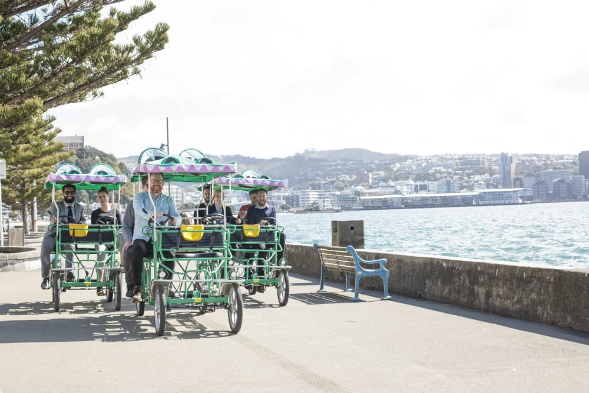
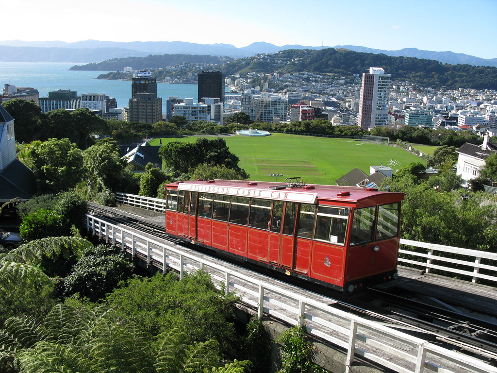
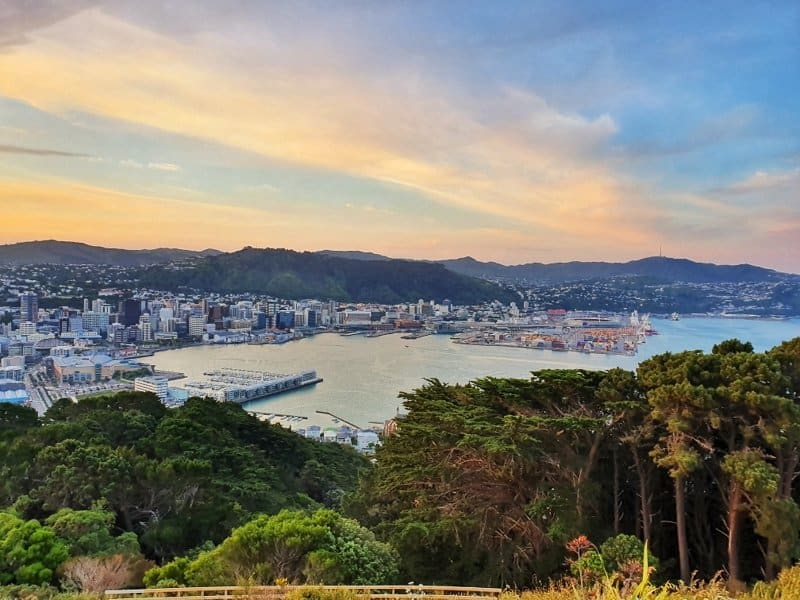

Mt Victoria is situated 196 metres above the ground. It is accessible by biking, walking or driving.
The lookout gives stunning oceanic views of Wellington city and the harbour. There are different routes you can take up Mt Victoria.
The Wellington cable car has two cable cars which start at opposite ends. On its route it passes through three bridges and three tunnels.
An interesting fact about Wellington cable car is that every time you enter a tunnel theres a free light show.
All along the water front there are food places as well as activities which are a must do.
The most popular activities include skating, biking, the pedal boats, or taking a kayak out onto the harbour.
There are numerous walks and artwork/sculptures along the waterfront that you can admire and heritage trails to walk along.
There is a place on the harbour called Enormous Crocodile where you can rent a crocobike for 30 minutes to an hour.
The bikes can seat 3 or 6 people, Enormous crocodile also does ice cream and shakes.
  